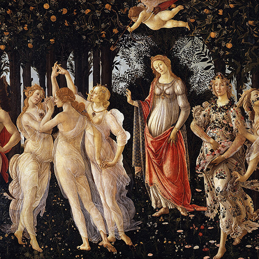

第11卦 天地泰：交換的呼吸
上卦：地（☷） ・ 下卦：天（☰）

核心意義
天地之氣在此刻交融，阻礙徹底消散，資源暢通無阻。這是一段運勢亨通、人願相隨的黃金時期。但通達最怕的是安樂而忘危；把握機會、與人同行之餘，更要保持清醒與謙遜，讓這份順遂成為長期經營的起點，而非曇花一現。
「我敞開身心迎接生命的通達順遂，在豐盛中共享喜悅。」
祝福
願你的生活如天地交融般順遂，人與人之間也能真誠相待、彼此成就。
五大類別指引
感情
感情容易進入流動、互相理解的狀態，很多事比之前更容易說開，這是一起往前規劃的好時機。趁氣氛穩定討論一個共同的未來目標，也別忘了感謝對方近期的付出，讓好循環延續。
趁氣氛穩定時，一起討論一個共同的未來目標：
- 主動表達對對方近期付出的感謝。
- 把目前有效的相處方式繼續維持下去。
事業
工作中的資源與合作正變得順暢，適合推動原本卡住的事情。好時機出現時，記得真正採取行動；優先推進已經準備成熟的計畫，主動整合可用的資源，把合作成果轉成固定的流程。
優先推進已經準備成熟的計畫：
- 主動整合目前可用的資源與人力。
- 把合作成果轉成固定的流程。
健康
身心狀態容易逐漸回到平衡，原本不順的地方開始改善。現在適合維持好循環，而非突然過度加量；保持目前有效的作息與活動，好轉後逐步增加，留意哪些習慣最明顯改善整體狀態。
保持目前有效的作息與活動，不突然加量：
- 感覺好轉後逐步增加活動量。
- 留意哪些習慣最明顯改善整體狀態。
財運
財務氣氛相對順暢，收入、資源或合作出現正向發展。現在適合穩健擴大，而非因順利失去紀律；把增加的收入優先投入長期目標，對成熟計畫可適度加碼，但保留原本的風險控制。
把增加的收入優先分配到長期目標：
- 對成熟的計畫可以適度加碼。
- 保留原本的風險控制，不因順利而鬆懈。
人際
人與人之間比較容易互相理解，合作與交流都有好的空間，這是主動修復與建立關係的時候。主動聯繫一位曾經疏遠但依然重要的人，安排能讓不同圈子交流的活動，並及時回應別人的善意。
主動聯繫一位曾經疏遠但依然重要的人：
- 安排能讓不同圈子自然交流的活動。
- 對別人的善意及時回應。